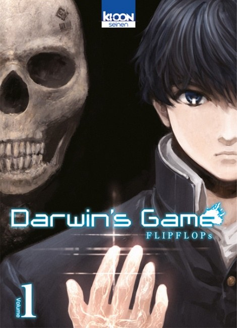

Darwin's Game

{kind=link}
© 2013 FLIPFLOPs, Akita Shoten
- Titre original : ダーウィンズゲーム
-
Origine :
 Japon -
2013
Japon -
2013
- Année VF : 2014
- Type : Shonen
- Genres : Action - Mystère - Science-fiction - Thriler - Tournois
- Thème : Survival Games
- Auteur : FLIPFLOPs
- Éditeur VO : Akita Shoten
- Éditeur VF : Ki-oon
- Nb volume VO : 20 (En cours)
- Nb volume VF : 19 (En cours)
- Âge conseillé : 14 ans et +
- Pour public averti : Oui (violence)
Synopsis
La vie de Kaname Sudo bascule le jour où ces quelques mots a priori inoffensifs s'affichent sur son portable. Il a le malheur d'accepter l'invitation. Aussitôt mordu au cou par un serpent virtuel surgi de l'écran, il est désormais l'esclave d'un jeu impitoyable, le Darwin's Game, véritable arène urbaine dans laquelle des participants interconnectés via un réseau social s'affrontent dans des duels à mort. Très vite, le lycéen doit se rendre à l'évidence : même s'il essaie de se soustraire au jeu, ses adversaires, attirés par l'appât du gain et le frisson du combat, sont prêts à tout pour le retrouver...